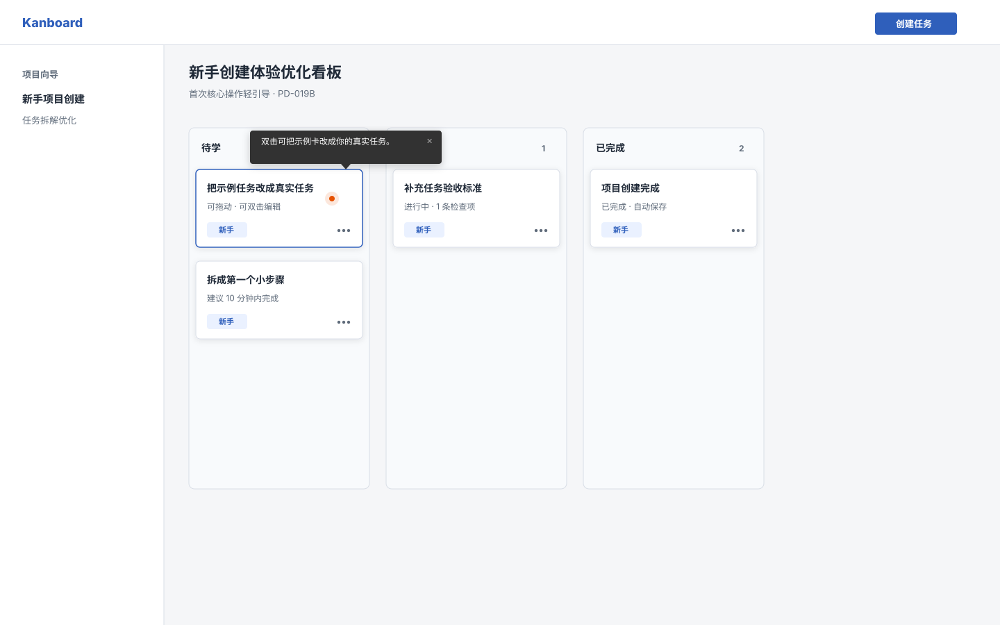
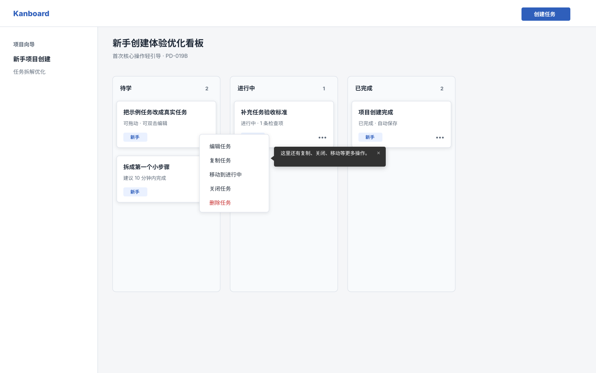
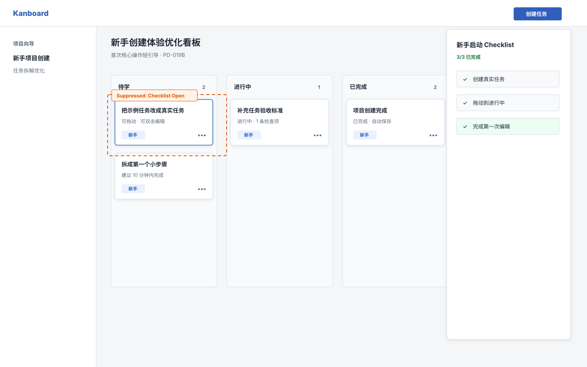
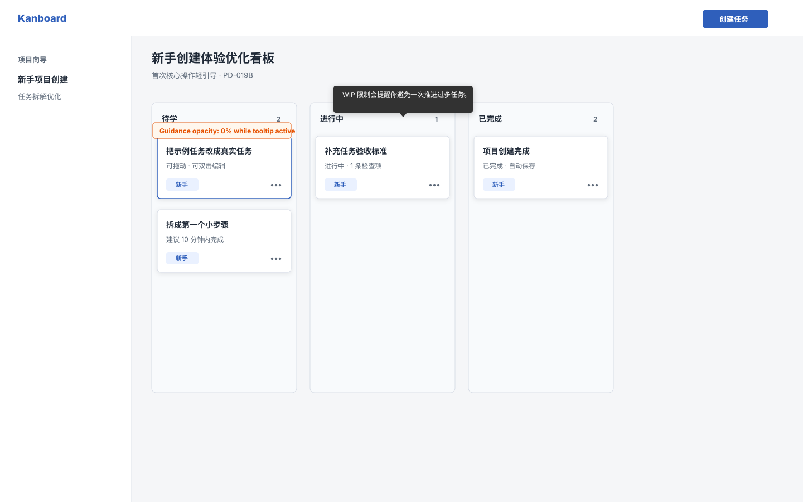
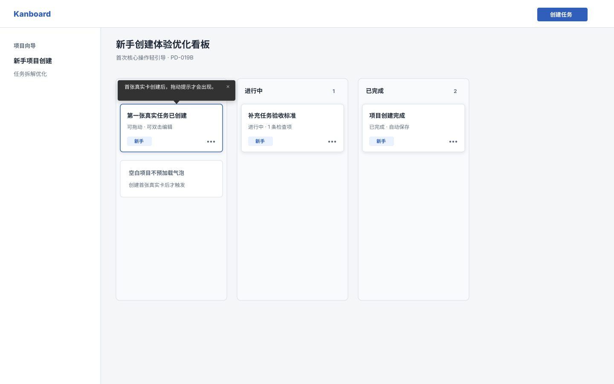
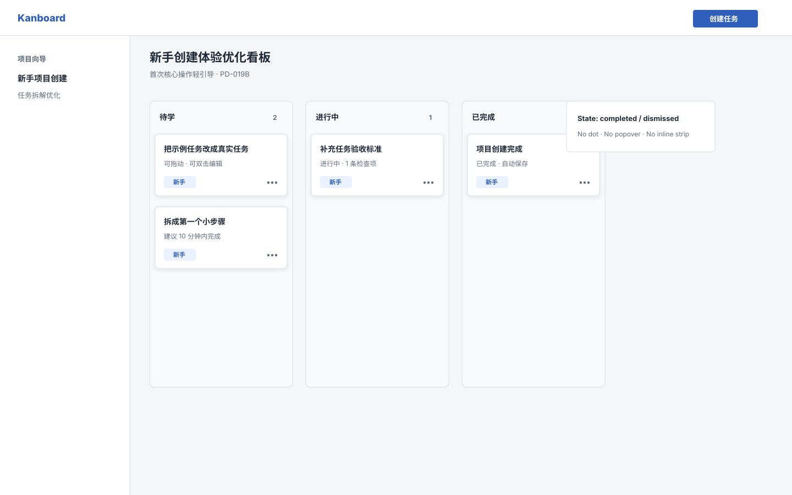
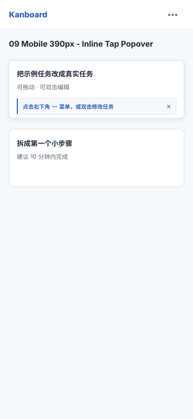
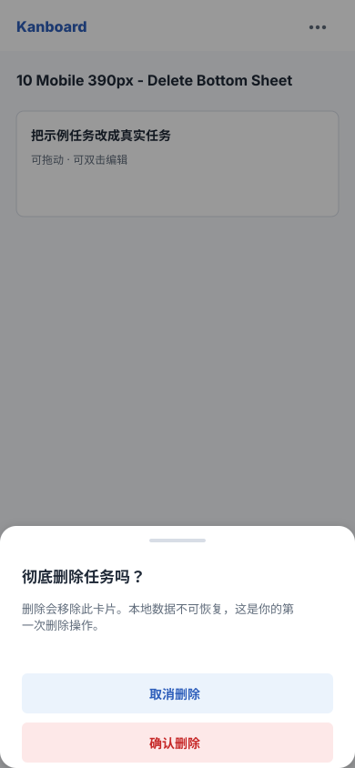
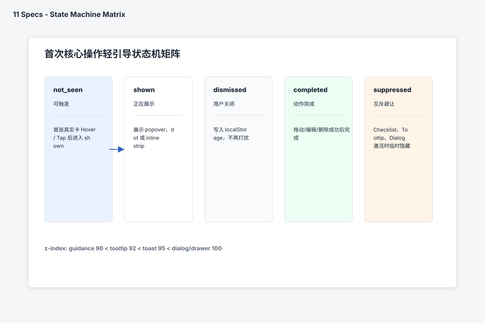
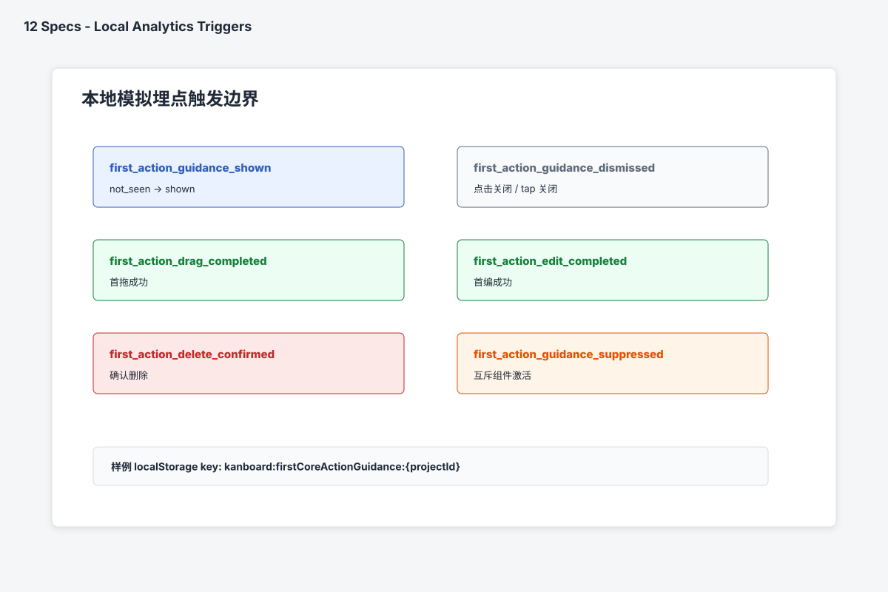

01 Desktop - 1st Drag Popover

02 Desktop - 1st Edit Dot & Popover

03 Desktop - 1st Delete Modal

04 Desktop - Task Menu Guidance

05 Desktop - Checklist Suppressed

06 Desktop - Tooltip Active Suppressed

07 Desktop - Blank Project Novice

08 Desktop - Senior User Zero Disturbance

09 Mobile 390px - Inline Tap Popover

10 Mobile 390px - Delete Bottom Sheet

11 Specs - State Machine Matrix

12 Specs - Local Analytics Triggers
